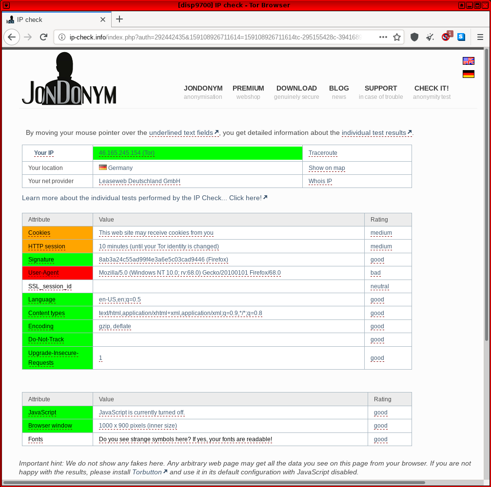

We believe security software like Whonix needs to remain Open Source and independent. Would you help sustain and grow the project? Learn more about our 14 year success story and maybe DONATE!
Outdated, Deprecated, Archived Whonix Documentation.
Most users can safely ignore this page.
 This page is archived.
This page is archived.
LKRG
System Hardening Checklist
Kernels / Kernel Modules
- Consider installing the Linux Kernel Runtime Guard (LKRG) kernel module for improved detection and protection against common kernel exploits. [1]
Hardened Malloc
Dev/Porting
Hardened Malloc
Hardened Memory Allocator
- maintained by third party: yes
- compiled: yes
- language: C
- compiled when: at package build time / at Whonix build time (if it was pre-installed)
- version number by upstream: yes
- upstream architecture support:
amd64only
- documentation: Hardened Malloc
- Debian package source code: https://github.com/Kicksecure/hardened_malloc
- kernel module: no
arm64issue: ticket says closed but is still an issue as per this comment https://github.com/GrapheneOS/hardened_malloc/issues/149#issuecomment-1010526647
lkrg
- maintained by third party: yes
- compiled: yes
- compiled when: at package installation time / at Whonix build time (if it was pre-installed)
- language: C
- version number by upstream: yes
- upstream architecture support:
amd64only - documentation: Linux Kernel Runtime Guard (LKRG)
- upstream: https://lkrg.org/
- Debian package source code: https://github.com/Kicksecure/lkrg
- kernel module: yes
- LKRG Development Discussion
Whonix-Workstation Security
Hardened Malloc
Hardened malloc ('hardened_malloc') is a hardened memory allocator created by security researcher, Daniel Micay.
According to the author's GitHub description: [2]
This is a security-focused general purpose memory allocator providing the malloc API along with various extensions. It provides substantial hardening against heap corruption vulnerabilities. The security-focused design also leads to much less metadata overhead and memory waste from fragmentation than a more traditional allocator design. It aims to provide decent overall performance with a focus on long-term performance and memory usage rather than allocator micro-benchmarks. It offers scalability via a configurable number of entirely independent arenas, with the internal locking within arenas further divided up per size class.
It is possible to use this as the memory allocator for many applications to increase security.
Refer to the dedicated Hardened Malloc wiki page for further details.
System Hardening Checklist
Memory Allocator
- Consider installing a hardened memory allocator ('Hardened Malloc') to launch regularly used applications. [3]
Dev/Anonymity
JonDonym
Not suited for Whonix for the Default-Download-Version.
This JonDonym chapter is a summary of the JonDonym chapter from the "Inspiration" page, which is about adding an option to Whonix to use JonDonym instead of Tor and a summary of the JonDonym introduction chapter, which reflects Patrick's opinion about the JonDonym network security.
- Less interest from the research community.
- Too little help (interest?) from upstream developers to create a JonDoBOX (See JonDonym chapter from the "Inspiration" page.).
- Free version too limited.
- In Patrick's opinion: less safe than Tor.
Email Alternatives
Anonymous Remailers
Anonymous Remailers are a generation of privacy networks that precede Tor. These are single purpose networks (only support sending email) that use high-latency designs to defeat surveillance. In this model a Usenet news group or person can receive email without learning your name or email address. Unfortunately the latest project -- the Mixmaster network -- has been removed from Debian because development has ceased and it is considered insecure. [4] [5]
Usenet
Nym server protected e-mail inbox
See the main Nymservers article for usage instructions.
Nym server connection sequence can be illustrated as:
some@mail.sender sends an mail to alice@nymserver.com
alice@nymserver.com → mail server A → mail server B → ... → mail server Z → final@inbox.comIt is a kind of protection, a proxy chain in front of an e-mail inbox.
Or in other words, a Nym server provides an e-mail address, where incoming mails are forwarded through a configurable chain of mail servers (Remailer), while not revealing the recipient's inbox to the sender.
This adds several advantages,
- e-mails can be received, while the e-mail provider is protected from pressure or force of an adversary and
- where the e-mail provider doesn't necessarily know, where the e-mail address has been published
- the e-mail provider doesn't know the sender e-mail address and can only see that the recipient became a mail from a remailer
It is my understanding, that the sender's email address will not be known to the recipient, because the remailer will strip it. (Unless the sender specifies it in the text.) However, the one sender of an e-mail is responsible for their own anonymity.
Another question is, if today's remailer really improve security. [6]
Further information:
- Definition - What does Nym Server mean?
- pseudonymous remailer
- Remailer
- Mixmaster
- Is Not My Name Nymserver
- Nym creation and use for mere mortals
- paranoia remailer
Nym server URL Retrieval
Nym server URL Retrieval is a way to download a web page with high latency and especially when combined with Tor, in theory, safer than Tor alone. In practice, there may be no additional anonymity from today's high latency networks and you could end up being one of the very few people using such, in theory, great services. For explanation about high latency network anonymity see Anonymity Network article[7] Further information on the bottom of mixnym.net.
Further information:
Please note that, Whonix developer Patrick Schleizer can not answer support requests related to Nym servers. This possibility has just been pointed out and wasn't tested in practice. It is a whole different thing than Whonix and very technical, difficult with many stumble points. Please look for another way, if you need support. Setting up Nym is not Whonix specific. Success stories, use cases, comments, improved documentation etc. however is welcome.
ip-check.info
Update: The original https://ip-check.info has a new owner and much less anonymity test functionality since JonDonym is shutting down.
https://ip-check.info -- This site is associated with the JonDonym anonymizing software and includes common fingerprinting vectors such as IP address, cookies, user agent, browser window dimensions, fonts and so on.
In past forum discussions, users were confused by some false values that were reported by the test; see footnote. [8] Complete faith cannot be placed in the browser test, since ip-check.info is not free/Libre/open source software (source), which means it is unlikely others can fix the test code. Further, since the test service is hosted by an alternative anonymizing network (JonDonym) with an associated JonDoFox anonymous browser -- a potential alternative to Tor / Tor Browser -- it is impossible to rule out biased results related to financial incentives (premium accounts).
Figure: ip-check.info Test in Whonix

One VM Whonix Configuration
 Warning: The one VM Whonix configuration has been
deprecated because there is no contributor. Use at your own risk!
Warning: The one VM Whonix configuration has been
deprecated because there is no contributor. Use at your own risk!
This platform was developed and tested successfully for Whonix v0.1.3.
Basically, it is possible to use one VM instead of two, with Tor running on the host OS and a single client VM routing activities via Tor. This configuration has several advantages and disadvantages relating to security and other matters. For further information, see OneVM.
lightdm
Debugging lightdm
Configure systemd to start lightdm in debug mode
1. Make sure folder
/lib/systemd/system/lightdm.service.d exists.
sudo mkdir -p /lib/systemd/system/lightdm.service.d
2. Create a file
/lib/systemd/system/lightdm.service.d/40_debug-misc.conf.
[10]
3. Open file
/lib/systemd/system/lightdm.service.d/40_debug-misc.conf in
an editor with administrative ("root") rights.
1 Select your platform.
2 Notes.
- Sudoedit guidance: See
 Open File with Root Rights for details on why using
Open File with Root Rights for details on why using
sudoeditimproves security and how to use it. - Editor requirement: Close Featherpad (or the chosen text
editor) before running the
sudoeditcommand.
3 Open the file with root rights.
sudoedit /lib/systemd/system/lightdm.service.d/40_debug-misc.conf
2 Notes.
- Sudoedit guidance: See
Open File with Root Rights for details on why using
sudoeditimproves security and how to use it. - Editor requirement: Close Featherpad (or the chosen text
editor) before running the
sudoeditcommand. - Template requirement: When using Qubes-Whonix, this must be done inside the Template.
3 Open the file with root rights.
sudoedit /lib/systemd/system/lightdm.service.d/40_debug-misc.conf
4 Notes.
- Shut down Template: After applying this change, shut down the Template.
- Restart App Qubes: All App Qubes based on the Template need to be restarted if they were already running.
- Qubes persistence: See also
Qubes Persistence
- General procedure: This is a general procedure required for Qubes and is unspecific to Qubes-Whonix.
2 Notes.
- Example only: This is just an example. Other tools could achieve the same goal.
- Troubleshooting and alternatives: If this example does not work for you, or if you are not using Whonix, please refer to Open File with Root Rights.
3 Open the file with root rights.
sudoedit /lib/systemd/system/lightdm.service.d/40_debug-misc.conf
4. Paste the following contents. [11]
[Service] ExecStart= ExecStart=/usr/sbin/lightdm --debug
Save.
Debug
Use lightdm restart method or reboot method.
lightdm restart method
1. Switch to another virtual console.
2. Stop lightdm.
sudo systemctl stop lightdm
3. Restart lightdm.
sudo systemctl restart lightdm
4. Check lightdm log.
Check Systemd Journal Log of Current Boot for lightdm.
For convenient reading of the log, it can be dumped to file. For
example, the following command would write the log to file
~/lightdm-log.
sudo journalctl -b -u lightdm > ~/lightdm-log
reboot method
Alternatively it is possible to reboot, but first you need to Enable Persistent Systemd Journal Log.
Check Systemd Journal Log of Previous Boot
sudo journalctl -b -1 -u lightdm
httpsdnsd by JonDos
Introduction
Source: anonymous-proxy-servers.net and also use it as a more verbose tutorial, but keep in mind that their tutorial is JonDonym specific, while this tutorial is Tor specific.
These instructions have not been tested for years. There might be no reasons to use these instructions. Above DNSCrypt might do everything that is required.
Installation
Everything inside your Whonix-Workstation™.
Install dependencies.
sudo apt install libnet-ssleay-perl libnet-server-perl libnet-dns-perl libxml-simple-perl liblog-log4perl-perl
Download httpsdnsd. (See source above in case download link changed.)
scurl --remote-name https://anonymous-proxy-servers.net/downloads/httpsdnsd.tar.bz2
Or manually run curl with these parameters. [12]
curl --tlsv1.3 --remote-name https://anonymous-proxy-servers.net/downloads/httpsdnsd.tar.bz2
Unpack.
. Go into the httpsdnsd folder.
cd httpsdnsd
Install httpsdnsd. [13]
sudo install.sh
Add a new user for httpsdnsd.
sudo adduser --system --disabled-password --group httpsdns_daemon
Editing /etc/resolv.conf is not required. (You still could out comment everything against DNS leaks.)
Create a firewall script.
nano dns-fw.sh
Insert these firewall rules.
# Flush old rules iptables -F iptables -t nat -F iptables -X
- Redirect DNS traffic to httpdnsd.
iptables -t nat -A OUTPUT -p udp -m owner --uid-owner anonuser --dport 53 -j REDIRECT --to-ports 4053
- Accept connections to the httpdnsd.
iptables -t filter -A OUTPUT -p udp -m owner --uid-owner anonuser --dport 4053 -j ACCEPT
- Reject all other traffic for anonuser.
iptables -t filter -A OUTPUT ! -o lo -m owner --uid-owner anonuser -j REJECT
Install Privoxy. [14]
sudo apt install privoxy
Open the privoxy configuration file.
nano /etc/privoxy/config
Add the following to your privoxy configuration file.
# Theoretically you can tunnel through any
- http or socks proxy. Local or remote proxy.
- Inside Whonix-Workstation, due to design,
- everything will be tunneled through Tor first.
- Using Tor's socks5 proxy, running on Whonix-Gateway<sup>™</sup>.
- Change the port, see above...
forward-socks5 / 10.152.152.10:9112 .
- Another example using a http proxy.
- (In this case, JonDo running on localhost.)
- forward / 127.0.0.1:4001
Restart privoxy to enable the changes.
sudo /etc/init.d/privoxy restart
Privoxy is now listening on 127.0.0.1:8118. [15]
Starting
Run httpsdnsd. [16] [17] [18] [19]
sudo httpsdnsd --https_proxy_port=8118 --runasdaemon
Activate the firewall. Shouldn't show any errors.
sudo ./dns-fw.sh
Using
Open a console and switch to anonuser.
su anonuser
Resolve DNS.
nslookup check.torproject.org
History
Cleared this wiki page. Still available in wiki history:
https://www.whonix.org/w/index.php?title=Deprecated&oldid=69089
Reason:
https://forums.whonix.org/t/long-wiki-edits-thread/3477/2158
monero-wallet-ws VM
Setup
Data vchan connection failed anon-ws-disable-stacked-tor socat-unix-sockets runs under user debian-tor but would need to run as root for this.
Note: The following instructions should be applied
in Whonix-Workstation (Qubes-Whonix™: App Qube
monero-wallet-ws).
1. Create folder
/usr/local/lib/systemd/system/.
sudo mkdir -p /usr/local/etc/anon-ws-disable-stacked-tor.d/
2. Create file
/usr/local/etc/anon-ws-disable-stacked-tor.d/50_user.conf.
Open file
/usr/local/etc/anon-ws-disable-stacked-tor.d/50_user.conf
in a text editor of
your choice as a regular, non-root user.
If you are using a graphical environment, run. featherpad /usr/local/etc/anon-ws-disable-stacked-tor.d/50_user.conf
If you are using a terminal, run. nano /usr/local/etc/anon-ws-disable-stacked-tor.d/50_user.conf
3. Paste the following contents.
socat TCP-LISTEN:18081,fork,bind=127.0.0.1 EXEC:"qrexec-client-vm monerod-ws user.monerod" &
4. Save.
5. Restart anon-ws-disable-stacked-tor systemd
system instance.
sudo systemctl restart anon-ws-disable-stacked-tor
6. Done.
Automatically starting the socat process has been
completed.
Xfce Disable Autologin
For lightdm display manager.
Not very useful inside VMs, see also Login Screen.
[20] sudo rm -f /etc/lightdm/lightdm.conf.d/whonix.conf
sudo rm -f /etc/lightdm/lightdm.conf.d/whonix-autologin.conf
sudo rm -f /etc/lightdm/lightdm.conf.d/30_autologin.conf
Enable Persistent Systemd Journal Log
By default, a persistent systemd journal log is not enabled in Debian. [22] To enable it, apply the following steps.
Platform specific notes:
- Non-Qubes-Whonix: No special steps are required; follow the steps below.
- Qubes users: The following changes must be applied in a VM with a persistent root image like a Template or Standalone. It could be confusing if applied in App Qubes since the systemd journal log might be mixed up with boots by the Template, while the App Qube systemd journal logs would not be persistent. bind-dirs might be helpful, but further research is required.
1. Create folder
/etc/systemd/journald.conf.d.
sudo mkdir -p /etc/systemd/journald.conf.d
2. Open file
/etc/systemd/journald.conf.d/60_persistent_journal.conf in
an editor with administrative ("root") rights.
1 Select your platform.
2 Notes.
- Sudoedit guidance: See
Open File with Root Rights for details on why using
sudoeditimproves security and how to use it. - Editor requirement: Close Featherpad (or the chosen text
editor) before running the
sudoeditcommand.
3 Open the file with root rights.
sudoedit /etc/systemd/journald.conf.d/60_persistent_journal.conf
2 Notes.
- Sudoedit guidance: See
Open File with Root Rights for details on why using
sudoeditimproves security and how to use it. - Editor requirement: Close Featherpad (or the chosen text
editor) before running the
sudoeditcommand. - Template requirement: When using Qubes-Whonix, this must be done inside the Template.
3 Open the file with root rights.
sudoedit /etc/systemd/journald.conf.d/60_persistent_journal.conf
4 Notes.
- Shut down Template: After applying this change, shut down the Template.
- Restart App Qubes: All App Qubes based on the Template need to be restarted if they were already running.
- Qubes persistence: See also
Qubes Persistence
- General procedure: This is a general procedure required for Qubes and is unspecific to Qubes-Whonix.
2 Notes.
- Example only: This is just an example. Other tools could achieve the same goal.
- Troubleshooting and alternatives: If this example does not work for you, or if you are not using Whonix, please refer to Open File with Root Rights.
3 Open the file with root rights.
sudoedit /etc/systemd/journald.conf.d/60_persistent_journal.conf
3. Add the following setting.
[Journal] Storage=persistent
Save.
4. Restart systemd-journald.
sudo systemctl restart systemd-journald
A persistent systemd journal log has now been enabled.
- Openwall:
... LKRG attempts to post-detect and hopefully promptly respond to unauthorized modifications to the running Linux kernel (integrity checking) or to credentials (such as user IDs) of the running processes (exploit detection). For process credentials, LKRG attempts to detect the exploit and take action before the kernel would grant the process access (such as open a file) based on the unauthorized credentials.
- https://github.com/GrapheneOS/hardened_malloc
- This provides hardening against heap corruption vulnerabilities and improves overall memory performance and usage. Note that using Hardened Malloc with Tor Browser or Firefox is difficult and unsupported.
- https://bugs.debian.org/cgi-bin/bugreport.cgi?bug=880101
- While sending one-way messages was relatively straightforward, receiving replies in Mixmaster required registration with a Nymserver and setting up a program to fetch messages from the decentralized Usenet boards.
- See Dev/Anonymity Network for explanation.
- Dev/Anonymity Network.
- ip-check.info some false values and confuses TBB users. (w)
- Example debug log
sudo journalctl -b -u lightdm -o cat Condition check resulted in Light Display Manager being skipped. Starting Light Display Manager... [+0.00s] DEBUG: Logging to /var/log/lightdm/lightdm.log [+0.00s] DEBUG: Starting Light Display Manager 1.26.0, UID=0 PID=933 [+0.00s] DEBUG: Loading configuration dirs from /usr/share/lightdm/lightdm.conf.d [+0.00s] DEBUG: Loading configuration from /usr/share/lightdm/lightdm.conf.d/01_debian.conf [+0.00s] DEBUG: Loading configuration dirs from /usr/local/share/lightdm/lightdm.conf.d [+0.00s] DEBUG: Loading configuration dirs from /etc/xdg/lightdm/lightdm.conf.d [+0.00s] DEBUG: Loading configuration from /etc/lightdm/lightdm.conf.d/autologin.conf [+0.00s] DEBUG: Loading configuration from /etc/lightdm/lightdm.conf.d/whonix-autologin.conf [+0.00s] DEBUG: [SeatDefaults] is now called [Seat:*], please update this configuration [+0.00s] DEBUG: Loading configuration from /etc/lightdm/lightdm.conf [+0.00s] DEBUG: Registered seat module local [+0.00s] DEBUG: Registered seat module xremote [+0.00s] DEBUG: Registered seat module unity [+0.00s] DEBUG: Using D-Bus name org.freedesktop.DisplayManager [+0.01s] DEBUG: Monitoring logind for seats [+0.01s] DEBUG: New seat added from logind: seat0 [+0.01s] DEBUG: Seat seat0: Loading properties from config section Seat:* [+0.01s] DEBUG: Seat seat0: Starting [+0.01s] DEBUG: Seat seat0: Creating user session [+0.01s] WARNING: Error getting user list from org.freedesktop.Accounts: GDBus.Error:org.freedesktop.DBus.Error.ServiceUnknown: The name org.freedesktop.Accounts was not provided by any .ser [+0.01s] DEBUG: Loading user config from /etc/lightdm/users.conf [+0.01s] DEBUG: User user added [+0.01s] DEBUG: Seat seat0: Creating display server of type x [+0.01s] DEBUG: posix_spawn avoided (fd close requested) [+0.02s] DEBUG: Could not run plymouth --ping: Failed to execute child process ?plymouth? (No such file or directory) [+0.02s] DEBUG: Using VT 7 [+0.02s] DEBUG: Seat seat0: Starting local X display on VT 7 [+0.02s] DEBUG: XServer 0: Logging to /var/log/lightdm/x-0.log [+0.02s] DEBUG: XServer 0: Writing X server authority to /var/run/lightdm/root/:0 [+0.02s] DEBUG: XServer 0: Launching X Server [+0.02s] DEBUG: Launching process 941: /usr/bin/X :0 -seat seat0 -auth /var/run/lightdm/root/:0 -nolisten tcp vt7 -novtswitch [+0.02s] DEBUG: XServer 0: Waiting for ready signal from X server :0 [+0.02s] DEBUG: Acquired bus name org.freedesktop.DisplayManager [+0.02s] DEBUG: Registering seat with bus path /org/freedesktop/DisplayManager/Seat0 Started Light Display Manager. [+0.98s] DEBUG: Got signal 10 from process 941 [+0.98s] DEBUG: XServer 0: Got signal from X server :0 [+0.98s] DEBUG: XServer 0: Connecting to XServer :0 [+0.99s] DEBUG: posix_spawn avoided (fd close requested) (child_setup specified) [+0.99s] DEBUG: Seat seat0: Display server ready, starting session authentication [+0.99s] DEBUG: Session pid=970: Started with service 'lightdm-autologin', username 'user' Error getting user list from org.freedesktop.Accounts: GDBus.Error:org.freedesktop.DBus.Error.ServiceUnknown: The name org.freedesktop.Accounts was not provided by any .service files [+1.01s] DEBUG: Session pid=970: Authentication complete with return value 0: Success [+1.01s] DEBUG: Seat seat0: Session authenticated, running command [+1.01s] DEBUG: Registering session with bus path /org/freedesktop/DisplayManager/Session0 [+1.01s] DEBUG: posix_spawn avoided (fd close requested) (child_setup specified) [+1.02s] DEBUG: Session pid=970: Running command /etc/X11/Xsession startxfce4 [+1.02s] DEBUG: Creating shared data directory /var/lib/lightdm/data/user [+1.02s] DEBUG: Session pid=970: Logging to .xsession-errors pam_unix(lightdm-autologin:session): session opened for user user by (uid=0) pam_exec(lightdm-autologin:session): Calling /usr/libexec/security-misc/permission-lockdown ... [+1.23s] DEBUG: Activating VT 7 [+1.23s] DEBUG: Activating login1 session 1 [+1.23s] DEBUG: Seat seat0 changes active session to 1 [+1.23s] DEBUG: Session 1 is already active [+839.74s] DEBUG: Seat seat0 changes active session to [+842.35s] DEBUG: Seat seat0 changes active session to 3 [+852.02s] DEBUG: Got signal 15 from process 1 [+852.02s] DEBUG: Caught Terminated signal, shutting down [+852.02s] DEBUG: Stopping display manager [+852.02s] DEBUG: Seat seat0: Stopping [+852.02s] DEBUG: Seat seat0: Stopping display server [+852.02s] DEBUG: Sending signal 15 to process 941 [+852.02s] DEBUG: Seat seat0: Stopping session [+852.02s] DEBUG: Terminating login1 session 1 Stopping Light Display Manager... [+852.05s] DEBUG: Session pid=970: Sending SIGTERM [+852.05s] DEBUG: Session pid=970: Exited with return value 0 [+852.05s] DEBUG: Seat seat0: Session stopped [+852.05s] DEBUG: Process 941 exited with return value 0 [+852.05s] DEBUG: XServer 0: X server stopped [+852.05s] DEBUG: Releasing VT 7 [+852.05s] DEBUG: XServer 0: Removing X server authority /var/run/lightdm/root/:0 [+852.05s] DEBUG: Seat seat0: Display server stopped [+852.05s] DEBUG: Seat seat0: Stopped [+852.05s] DEBUG: Display manager stopped [+852.05s] DEBUG: Stopping daemon [+852.05s] DEBUG: Exiting with return value 0 lightdm.service: Succeeded. Stopped Light Display Manager. - echo " [Service] ExecStart= ExecStart=/usr/sbin/lightdm --debug " | sudo tee /lib/systemd/system/lightdm.service.d/40_debug-misc.conf
ExecStart=is required to clear the originalExecStart=so it can be overwritten byExecStart=/usr/sbin/lightdm --debug.- This has the same effect as the scurl command above.
- It contains also a uninstall.sh, if you want to uninstall it later.
- torproject.org Wiki Version 95 of this site contains a working example using Polipo. Changed later to Privoxy, because Privoxy can be useful for other tasks as well. (Incoming: TransPort, http proxy; forwarding: http and socks.)
- For debugging you can enter this IP/port into Tor Browser as http proxy and try if you can still reach check.torproject.org. Deactivate after testing.
- For debugging, kill httpsdnsd and drop the --runasdaemon.
- Run httpsdnsd --help or man httpsdnsd for help.
- Httpsdnsd will by default listen on localhost port 4053 for DNS queries.
- --https_proxy_port=8118 will redirect traffic to port 8118, where Privoxy is listening. This is necessary because Tor offers a socks proxy and httpsdnsd requires a http proxy. Privoxy translates from http to socks.
- legacy
- * vm-config-dist * https://github.com/Kicksecure/vm-config-dist/-/blob/master/etc/lightdm/lightdm.conf.d/30_autologin.conf
- https://bugs.debian.org/cgi-bin/bugreport.cgi?bug=801906